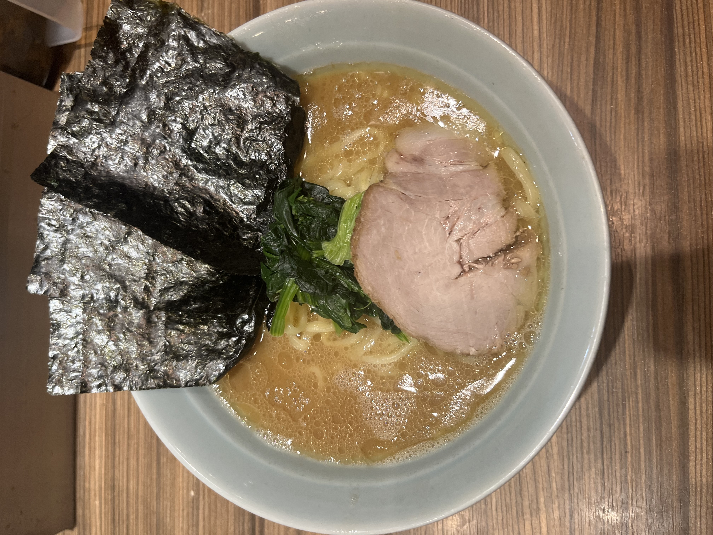
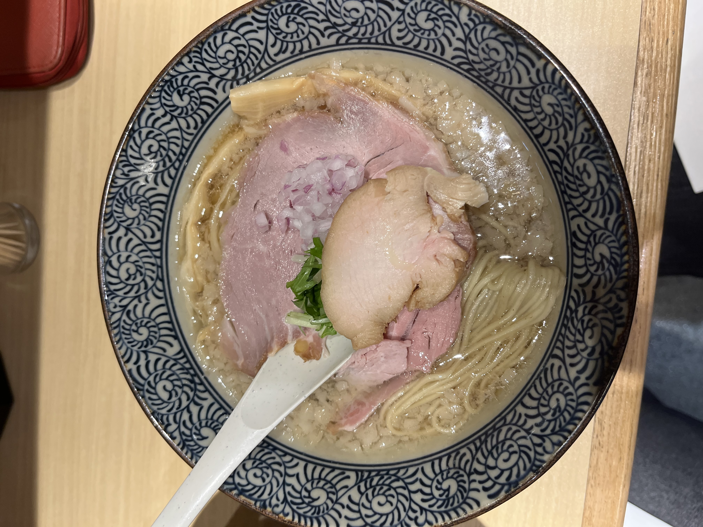
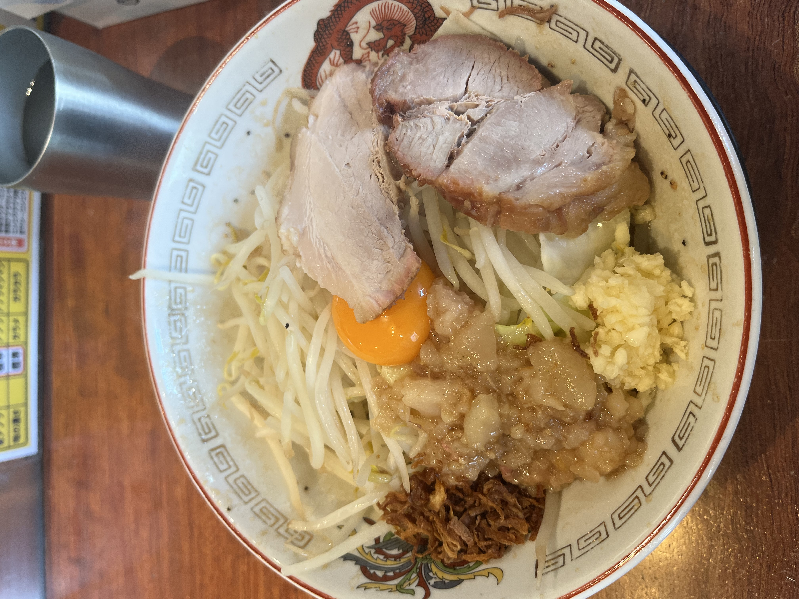
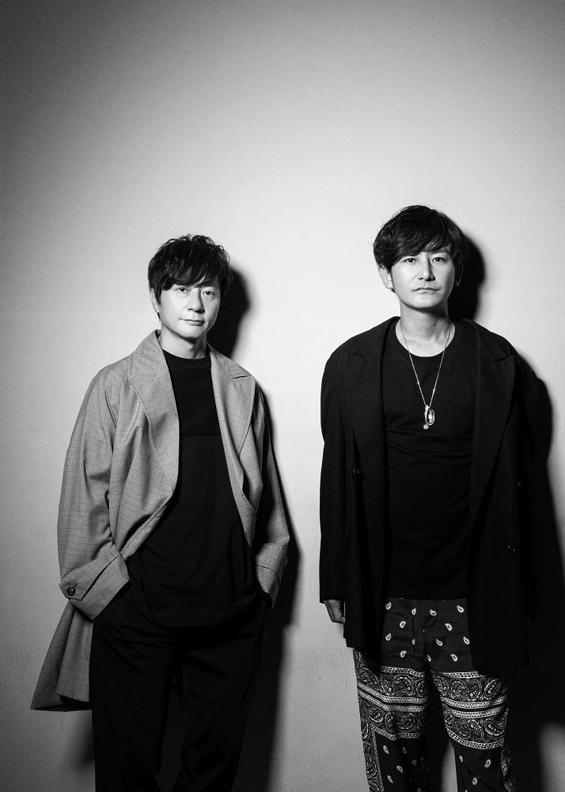
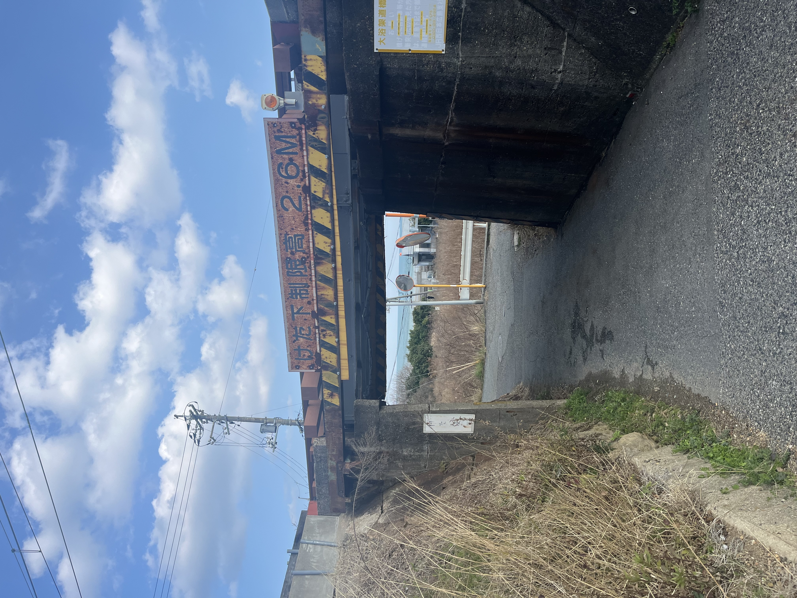
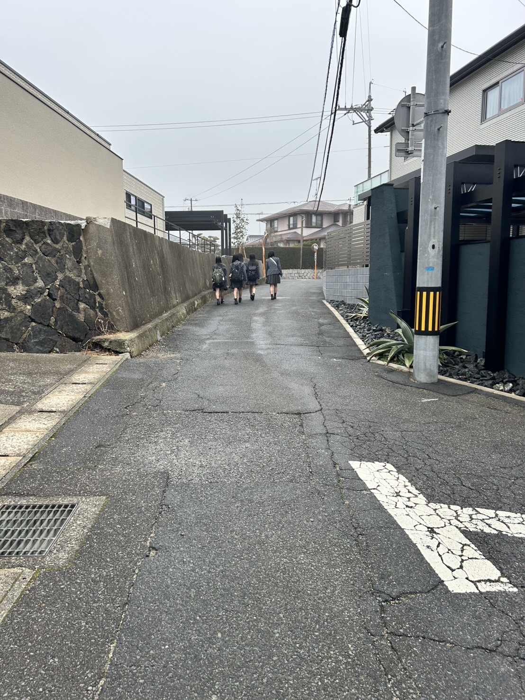
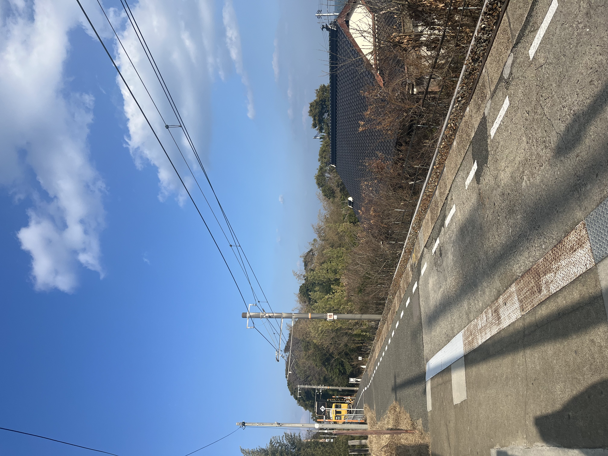
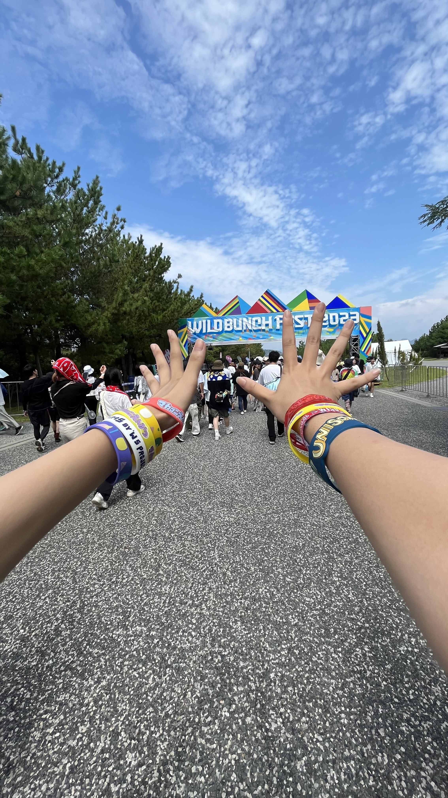

原田実咲
posse③の7期生です。明治大学政治経済学部政治学科1年です。 プログラミングは初心者ですが、愚直に頑張ってスキルを伸ばしていきたいです！🔥
好きなことやもの
- ①食べること
- ②歌🎤
- ③地元（山口県！）
①食べること



ラーメンが特に大好きです！ガチ二郎に挑戦するのが最近の目標です☆彡
②歌🎤
shishamoとポルノグラフィティが特に大好きです💛 shishamoは今度の6/14のライブで解散してしまいます😢解散ライブはもちろん参戦！！ ポルノグラフィティはまだライブに行ったことはないけどいつか絶対に行ってみたい☆彡

③地元（山口県！）
山口県は、とにかく田舎！だけど田舎なりの魅力がたくさんあります！！




自然いっぱいでド田舎なのになぜか国内でも有名な屋外フェスが開催される、！ 今年の夏にも帰省してワイバンに行く予定です！楽しみすぎる！！皆さんもサイトをチェックしてみてください☆ ワイバン公式サイト
最後に
以上が私の自己紹介です！一生懸命頑張ってPOSSEの活動を後悔のないような経験にしたいです！よろしくお願いします😊 h1-h3タグ、pタグ、ulタグ、liタグ、imgタグを使用して、自己紹介ページを作成しました。h1-h3タグは見出しを表すために使用し、pタグは段落を表すために使用しました。ulタグとliタグはリストを作成するために使用し、imgタグは画像を表示するために使用しました。画像の添付に苦戦しましたが、AIを活用しながらしたことでファイルをweek01-1に挿入できたので問題を解決できました。